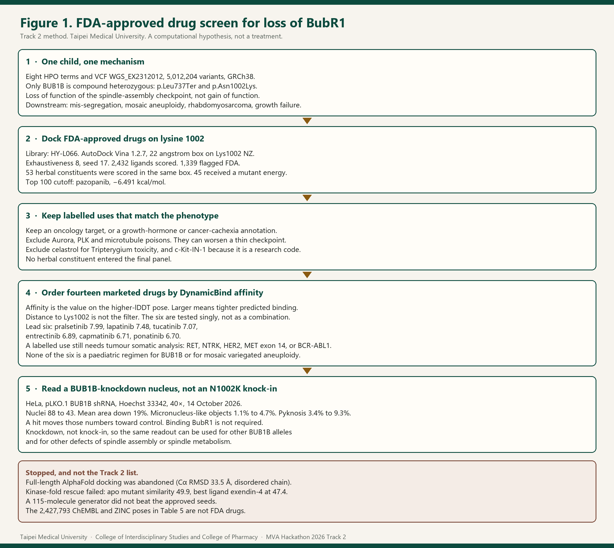
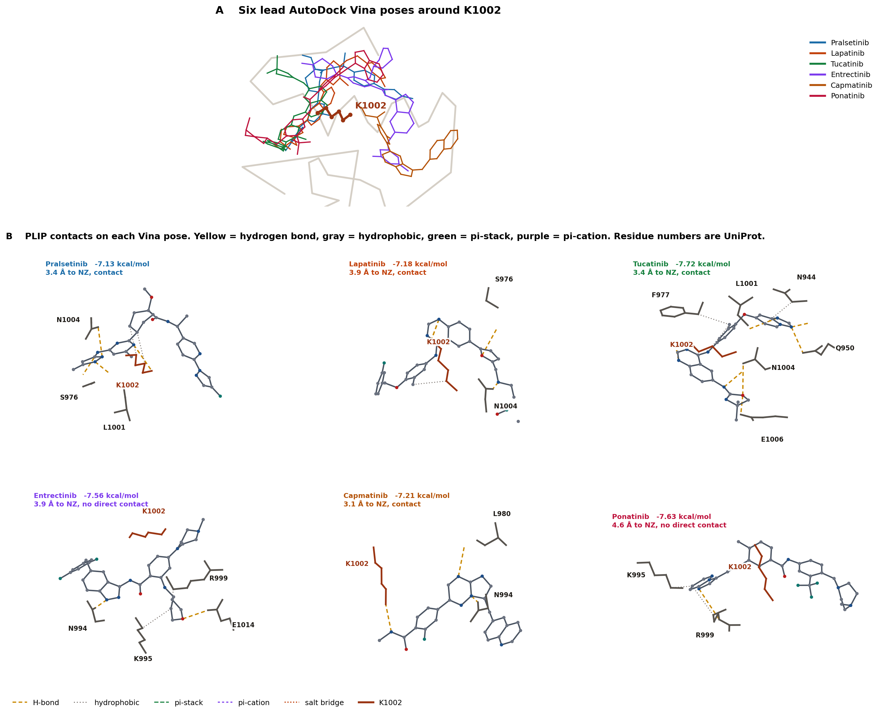
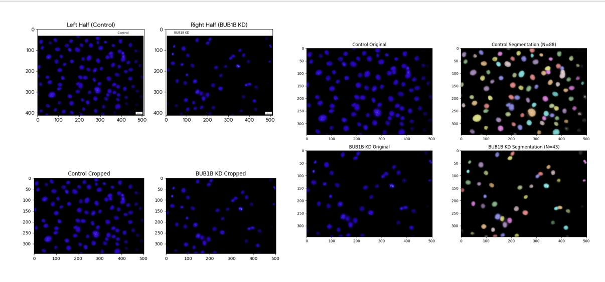

團隊Team
TMU-IIH PharmOmics。台北醫學大學跨領域學院與藥學院。作者是 wang3yuan 與 Hung-Lin Chen。通訊作者是 Hung-Lin Chen，Hugging Face 帳號 hunglinchen2003。wang3yuan 的帳號是 wang3yuan，並送出第一版。一人代表團隊送出；評審看的是最新一筆。TMU-IIH PharmOmics. Taipei Medical University, College of Interdisciplinary Studies and College of Pharmacy. Authors: wang3yuan and Hung-Lin Chen. Corresponding author: Hung-Lin Chen, Hugging Face account hunglinchen2003. wang3yuan submits version 1. One member submits. Judges review the latest submission.
比賽：SageBio Rare Disease, Real Kid · MVA Hackathon 2026。Track 2 要的是已上市藥物的新用途，而且要說清楚機制。Challenge: SageBio Rare Disease, Real Kid · MVA Hackathon 2026. Track 2 asks for a new use of a market-approved drug, with the mechanism stated.
Track 2 送件需要的資訊What Track 2 asks for
| 項目Item | 本團隊的答案This team |
|---|---|
| 團隊名稱Team name | TMU-IIH PharmOmics · 台北醫學大學跨領域學院與藥學院 |
| GitHub | https://github.com/hunglinchen2003/mva-track2-tmu |
| 報告檔名Report filename | hunglinchen2003_track2_report.md |
| 提案藥物Proposed drugs | 14 個 FDA 核准藥。優先六名：pralsetinib、lapatinib、tucatinib、entrectinib、capmatinib、ponatinib。Fourteen FDA-approved drugs. Lead six: pralsetinib, lapatinib, tucatinib, entrectinib, capmatinib, ponatinib. |
| 機制Mechanism | 功能失去（LOF）。紡錘體檢查點不足，下游是染色體分離錯誤、鑲嵌性非整倍體、胚胎性腫瘤與生長失敗。Loss of function. A thin spindle-assembly checkpoint, then mis-segregation, mosaic aneuploidy, embryonal tumour risk and growth failure. |
| 生成式 AIGenerative AI | Cursor 工作階段，模型 Grok 4.7（xAI）。方案等級沒有另行登記。對接分數由本機 Vina 與 DynamicBind 計算，不是語言模型填的。Cursor session, model Grok 4.7 (xAI). The subscription tier was not logged separately. Docking scores come from local Vina and DynamicBind, not from the language model. |
| 三分鐘影片Three-minute pitch | https://youtu.be/415cWfMVpw8 |
邏輯Logic
Track 2 的方法就是 FDA 核准藥篩選，圖一。先確認這個孩子是 BUB1B 功能喪失，再把已上市藥對上 Lys1002，留下癌症或生長失敗相關的用途，用 DynamicBind 親和力排序，最後用 knockdown 細胞核來讀。
The Track 2 method is the FDA-approved drug screen in Figure 1. Confirm BUB1B loss of function, dock marketed drugs on Lys1002, keep cancer or growth-failure uses, rank by DynamicBind affinity, and read a knockdown nucleus.
- 八個 HPO 詞加上 VCF（5,012,204 個變異）。只有 BUB1B 是複合異型合子：p.Leu737Ter 與 p.Asn1002Lys。機制是紡錘體檢查點的功能喪失。Eight HPO terms plus the VCF (5,012,204 variants). Only BUB1B is compound heterozygous: p.Leu737Ter and p.Asn1002Lys. The mechanism is loss of function of the spindle-assembly checkpoint.
- HY-L066，AutoDock Vina 1.2.7，Lys1002 NZ 上的 22 Å 盒子。2,432 個配體有分數，1,339 個標成 FDA。53 個中藥單體放在同一個盒子。前 100 名的門檻是 pazopanib，−6.491 kcal/mol。HY-L066, AutoDock Vina 1.2.7, a 22 Å box on Lys1002 NZ. 2,432 ligands scored, 1,339 flagged FDA. Fifty-three herbal constituents went into the same box. The top-100 cutoff is pazopanib at −6.491 kcal/mol.
- 留下腫瘤標靶，或生長激素、癌症惡病質的註記。排除 Aurora、PLK、微管藥、雷公藤紅素，以及研究代碼 c-Kit-IN-1。沒有中藥單體進入最後面板。Keep an oncology target, or a growth-hormone or cancer-cachexia annotation. Exclude Aurora, PLK and microtubule poisons, celastrol, and the research code c-Kit-IN-1. No herbal constituent entered the final panel.
- 十四個已上市藥依 DynamicBind 對激酶的預測親和力排序。距離不是門檻。優先六名單藥測試：pralsetinib 7.99、lapatinib 7.48、tucatinib 7.07、entrectinib 6.89、capmatinib 6.71、ponatinib 6.70。不是複方，也不是兒童處方。核准用途還要腫瘤的體細胞突變分析。Fourteen marketed drugs are ordered by DynamicBind affinity for the kinase. Distance is not the filter. The lead six are tested singly: pralsetinib 7.99, lapatinib 7.48, tucatinib 7.07, entrectinib 6.89, capmatinib 6.71, ponatinib 6.70. Not a combination and not a paediatric regimen. A labelled use still needs tumour somatic analysis.
- 讀值是 HeLa BUB1B knockdown 的細胞核，不是 N1002K knock-in。細胞核 88 到 43。命中是這些數字回到對照。Knockdown 讓同一個讀值可以用在其他 BUB1B 基因型，以及其他紡錘體組成或代謝異常。The readout is a HeLa BUB1B-knockdown nucleus, not an N1002K knock-in. Nuclei fell from 88 to 43. A hit moves those numbers toward control. Knockdown keeps the same readout usable for other BUB1B genotypes and for other defects of spindle assembly or spindle metabolism.
停掉、而且不是這份方法的路：全長對接（Cα RMSD 33.5 Å）、激酶摺疊救援（空載 49.9，最好的配體 47.4）、115 個分子的生成沒有勝過種子，以及 2,427,793 個 ChEMBL／ZINC 姿態（表 5）。那些都不是 FDA 藥。Stopped, and not this method: full-length docking (Cα RMSD 33.5 Å), kinase-fold rescue (apo 49.9, best ligand 47.4), a 115-molecule generator that did not beat the seeds, and 2,427,793 ChEMBL/ZINC poses (Table 5). Those are not FDA drugs.
機制Mechanism
無效等位基因是 chr15:40209701 T>G，p.Leu737Ter，stop_gained，HIGH，深度 46，等位深度 21/25，VAF 約 54%。終止密碼在 1,050 個胺基酸的約 70% 處，拿掉 C 端激酶域，是典型的無義媒介衰變受質。The null allele is chr15:40209701 T>G, p.Leu737Ter, stop_gained, HIGH impact, depth 46, allelic depths 21 and 25, VAF about 54%. The stop is at about 70% of the 1,050-residue protein and removes the C-terminal kinase. It is a classical nonsense-mediated-decay substrate.
第二個等位基因是 chr15:40220612 T>G，p.Asn1002Lys，missense，MODERATE，深度 28，等位深度 15/13，VAF 約 46%。SIFT 0.00，PolyPhen-2 0.99，CADD 24.5。它在激酶 C 葉螺旋 αG 的 N-cap，離已發表的熱點 p.Leu1012Pro 十個殘基。ATP 位點的 Lys795 只移動 1.03 Å。1002 的 Cα 移動 4.07 Å。這比較像蛋白質不穩定，而不是催化位點壞死。新的離胺酸側鏈溶劑可及表面從 27 增到 82 Ų。它在幾何上可以被泛素化，我們沒有測泛素。The second allele is chr15:40220612 T>G, p.Asn1002Lys, missense, MODERATE, depth 28, allelic depths 15 and 13, VAF about 46%. SIFT 0.00, PolyPhen-2 0.99, CADD 24.5. It is the N-cap of helix αG, ten residues from the published hotspot p.Leu1012Pro. The ATP-site lysine, Lys795, moves only 1.03 Å. The Cα at 1002 moves 4.07 Å. That fits instability better than a dead catalytic site. Side-chain SASA rises from 27 to 82 Ų. The new amine could be ubiquitylated. We did not measure ubiquitin.
沒有親代 DNA，所以反式排列是依合子型與疾病模型推論。Track 1 這對變異的信心是 0.95。cDNA 編號沒有另寫，因為沒有 RNA。There is no parental DNA, so trans configuration is inferred from zygosity and the disease model. Track 1 confidence for the pair was 0.95. No cDNA nomenclature was invented, because there is no RNA.
方法Methods
從變異到藥From variant to drug
VCF 是主辦單位釋出的 Sentieon Haplotyper 加 GATK 過濾結果，參考基因組 GRCh38，樣本 WGS_EX2312012。我們沒有重跑 FASTQ。十個 MVA 基因用 Ensembl 座標掃描，VEP 註解，再以 MalaCards 的十二個位點複查。只有同時有兩個功能性等位基因的基因留下。The VCF is the released Sentieon Haplotyper plus GATK call on GRCh38 for sample WGS_EX2312012. FASTQ was not realigned. Ten MVA genes were scanned on Ensembl coordinates and annotated with VEP, then a twelve-locus MalaCards pass was repeated. A gene was kept only when it carried two functional alleles.
結構用 AlphaFold。後續對接只用 UniProt 700–1050。Vina 盒子是以突變體 Lys1002 NZ（−26.781, −7.289, 7.438）為中心的 22 Å 立方體，Vina 1.2.7，exhaustiveness 8，seed 17。HY-L066 已有 2,432 個獨特配體分數，其中 1,339 個在廠商表標成 FDA。53 個中藥單體來自 PubChem，已在藥庫的沿用舊分數，不在藥庫的以 RDKit ETKDGv3（seed 17）與 Meeko 準備後對接。Structures are AlphaFold models. Later docking used UniProt 700–1050 only. The Vina box is a 22 Å cube on mutant Lys1002 NZ (−26.781, −7.289, 7.438), Vina 1.2.7, exhaustiveness 8, seed 17. HY-L066 already had scores for 2,432 unique ligands, 1,339 flagged FDA in the vendor table. Fifty-three herbal constituents came from PubChem. Existing library scores were reused. New molecules were prepared with RDKit ETKDGv3 (seed 17) and Meeko.
前 100 名依突變體 Vina 能量。留下標靶屬於腫瘤激酶，或註明生長激素訊息、泌尿道的藥。說明文字裡順帶提到抗腫瘤，不算腫瘤藥。雷公藤紅素因雷公藤毒性移除。c-Kit-IN-1 在 PubChem 是研究代碼，移除。DynamicBind 用論文權重、10 steps、每個複合物 2 個樣本、不做 relax。表 6 的親和力是較高 lDDT 姿態上的預測值，數字愈大表示模型認為跟激酶結合愈緊。它不是 Vina 的 kcal/mol，也不拿離 Lys1002 的距離當錄取條件。The top 100 were ranked by mutant Vina energy. A row was kept when the annotated target was an oncology kinase, or the text matched growth-hormone signalling or the urinary tract. A passing anticancer sentence was not an oncology indication. Celastrol was removed for Tripterygium toxicity. c-Kit-IN-1 is a research code on PubChem and was removed. DynamicBind used paper weights, 10 steps, two samples, no relaxation. Table 6 affinity is the value on the higher-lDDT pose. A larger number is a higher predicted affinity for the kinase. It is not a Vina energy in kcal/mol, and distance to Lys1002 was not an acceptance rule.
前六名的剛性姿態用 PLIP 3.0.1 讀複合物，畫出和 K1002 的相對位置。那張圖是幾何補充，不改變表 6 的排序。The six lead rigid poses were read with PLIP 3.0.1 and drawn against K1002. That figure is geometry. It does not reorder Table 6.
人工與自動Manual and automated
變異掃描、Vina、DynamicBind、PLIP 是自動的。人工決定包括：全長對接放棄、有絲分裂毒物不進保護清單、廠商表上的研究代碼剔除、膀胱藥不當成腎鈣質沉著的藥，以及最後用 DynamicBind 親和力而不是距離來排核准藥。Variant scan, Vina, DynamicBind and PLIP were automated. Manual decisions were: stop full-length docking, keep mitotic poisons off the protective list, drop a vendor “FDA” row that is a research code, not treat bladder drugs as nephrocalcinosis drugs, and rank the approved list by DynamicBind affinity rather than by distance.
資料Data
公開：黑客松 VCF 與表型、Ensembl、VEP、gnomAD 註解、ClinVar、HPO、OMIM、MalaCards、PubMed、ChEMBL、ZINC20、PubChem、UniProt。專有或廠商：MedChemExpress HY-L066 清單（未整份公開）、本機親和圖。HeLa 影像是本團隊 2026-10-14 的 wild-type knockdown，不是病人細胞，也不是 N1002K 敲入。Public: the hackathon VCF and phenotypes, Ensembl, VEP, gnomAD annotation, ClinVar, HPO, OMIM, MalaCards, PubMed, ChEMBL, ZINC20, PubChem, UniProt. Proprietary or vendor: the MedChemExpress HY-L066 table (not republished in full) and the local affinity maps. The HeLa image is this team’s wild-type knockdown on 14 Oct 2026. It is not a patient cell and not an N1002K knock-in.
生成式 AI，必填Generative AI, required
Cursor 工作階段，模型 Grok 4.7（xAI）。訂閱等級沒有寫進分析紀錄。語言模型用來寫腳本、整理本機輸出與這份報告。Vina、DynamicBind、PLIP 與細胞核計數不是模型生成的。對接在本機工作站完成。這份報告不主張變異層級的資料被拿去訓練模型。Cursor session, model Grok 4.7 (xAI). The subscription tier was not written into the analysis log. The language model wrote scripts, assembled local outputs, and drafted this report. Vina, DynamicBind, PLIP and the nuclear counts were not generated by the model. Docking ran on the local workstation. This report does not claim that variant-level data were used to train the model.
方法摘要Method abstract
一個 MVA 孩子的 VCF 與八個 HPO 詞指出 BUB1B 複合異型合子：p.Leu737Ter 與 p.Asn1002Lys。前者像無效等位基因，後者在 αG，預測使 BubR1 不穩定。全長伴護與激酶摺疊救援都失敗。Track 2 清單因此改為 FDA 藥。HY-L066 在 Lys1002 的 22 Å 盒子已有 Vina 分數。前 100 名再依腫瘤或生長相關適應症過濾，十四個藥用 DynamicBind 預測對激酶的親和力排序。優先六名是 pralsetinib、lapatinib、tucatinib、entrectinib、capmatinib、ponatinib。優點是每一個都是已上市藥，而且分數可回溯到本機輸出。限制是沒有親代相位、沒有病人細胞、Vina 不是解離常數、DynamicBind 親和力不是 Kd，而且激酶抑制劑對檢查點已弱的孩子可能有細胞毒性。提出的實驗是 HeLa knockdown 細胞核是否回到對照。不用 N1002K knock-in，是為了讓讀值適用於其他 BUB1B 與紡錘體異常的 MVA 病人。另外用 Connectivity Map（LINCS L1000）列出 32 個會提高 BUB1B mRNA 的簽名。細胞假說是 mRNA 與蛋白並行回補缺陷：先測 doxycycline，單藥有效後再跟 entrectinib 或 pralsetinib 配一對。有絲分裂毒物不進這一對。前六名單藥篩選，不是複方，也不是兒童處方；核准用途還需要腫瘤的體細胞突變分析。不是臨床劑量。The child’s VCF and eight HPO terms point to compound-heterozygous BUB1B: p.Leu737Ter and p.Asn1002Lys. The first looks null. The second sits on helix αG and is predicted to destabilize BubR1. Full-length chaperone docking and kinase-fold rescue both failed. The Track 2 list is therefore FDA drugs. HY-L066 already had Vina scores in a 22 Å box on Lys1002. The top 100 were filtered for cancer or growth-related labels, and fourteen drugs were ordered by DynamicBind’s predicted affinity for the kinase. The lead six are pralsetinib, lapatinib, tucatinib, entrectinib, capmatinib and ponatinib. The strength is that each name is marketed and every number traces to a local output. The limits are no parental phase, no patient cells, Vina is not a dissociation constant, DynamicBind affinity is not a Kd, and kinase inhibitors may be cytotoxic when the checkpoint is already weak. The proposed experiment is whether the HeLa knockdown nucleus returns toward control. Knockdown, rather than an N1002K knock-in, keeps the readout usable for other BUB1B genotypes and other spindle defects in MVA. In parallel, Connectivity Map (LINCS L1000) listed 32 signatures in which BUB1B mRNA rose. The cell hypothesis restores the defect from both sides, message and protein: doxycycline first, then one pair with entrectinib or pralsetinib only after each single works. Mitotic poisons stay out of that pair. The lead six are single-agent assay candidates, not a combination and not a paediatric regimen; a labelled use would also need somatic analysis of the tumour. It is not a clinical dose.
結果Results

表 6. FDA 藥，依 DynamicBind 親和力排序Table 6. FDA drugs, ordered by DynamicBind affinity
Vina 是 kcal/mol。DB 是預測親和力，愈大愈緊。優先組是前六列：核准的腫瘤藥，突變體 Vina ≤ −7.1，而且 DB ≥ 6.7。Vina values are kcal/mol. DB is predicted affinity; larger means tighter. The lead set is the first six rows: approved oncology drugs, mutant Vina ≤ −7.1, and DB ≥ 6.7.
| # | 藥Drug | 與此案例的連結Link to this case | Vina 突變Vina mutant | Vina 野生Vina wild type | DB 突變DB mutant | DB 野生DB wild type | 角色Role |
|---|---|---|---|---|---|---|---|
| 1 | Pralsetinib | RET；癌症RET; cancer | −7.127 | −6.646 | 7.99 | 7.85 | 優先Lead |
| 2 | Lapatinib | EGFR/HER2；癌症EGFR/HER2; cancer | −7.181 | −6.516 | 7.48 | 7.56 | 優先Lead |
| 3 | Tucatinib | HER2；癌症HER2; cancer | −7.718 | −6.847 | 7.07 | 7.03 | 優先Lead |
| 4 | Entrectinib | TRK、ROS1、ALK；癌症TRK, ROS1, ALK; cancer | −7.560 | −7.151 | 6.89 | 6.63 | 優先Lead |
| 5 | Capmatinib | MET；癌症MET; cancer | −7.207 | −7.043 | 6.71 | 6.76 | 優先Lead |
| 6 | Ponatinib | BCR-ABL 等；癌症BCR-ABL and others; cancer | −7.631 | −7.287 | 6.70 | 6.67 | 優先Lead |
| 7 | Infigratinib | FGFR；癌症FGFR; cancer | −6.790 | −5.489 | 6.60 | 6.54 | 較早的 cover seedEarlier cover seed |
| 8 | Nilotinib | BCR-ABL；癌症BCR-ABL; cancer | −8.282 | −7.104 | 6.58 | 6.68 | Vina 最緊Tightest Vina |
| 9 | Pexidartinib | CSF1R、c-Kit；癌症CSF1R, c-Kit; cancer | −6.984 | −6.321 | 6.43 | 6.39 | 延伸Extended |
| 10 | Regorafenib | 多激酶；癌症Multikinase; cancer | −7.098 | −6.607 | 6.26 | 6.61 | 延伸Extended |
| 11 | Macimorelin | 生長激素促分泌；矮小、體重不增、惡病質GH secretagogue; short stature, failure to thrive, cachexia | −6.507 | −6.456 | 6.20 | 6.27 | 生長臂Growth arm |
| 12 | Cabozantinib | MET、VEGFR；癌症MET, VEGFR; cancer | −7.012 | −6.286 | 6.07 | 6.24 | 延伸Extended |
| 13 | Momelotinib | JAK1/2；骨髓纖維化JAK1/2; myelofibrosis | −7.393 | −6.527 | 5.99 | 6.06 | 延伸Extended |
| 14 | Sorafenib | RAF、VEGFR；癌症RAF, VEGFR; cancer | −7.063 | −6.712 | 5.91 | 6.48 | 延伸Extended |

| 藥Drug | 最近重原子到 NZNearest heavy atom to NZ | PLIP 與 K1002PLIP at K1002 |
|---|---|---|
| Pralsetinib | 3.4 Å | 氫鍵 2.60 Å，另有疏水接觸H-bond 2.60 Å, plus hydrophobic contacts |
| Lapatinib | 3.9 Å | 氫鍵 3.09 Å 與 3.20 Å，另有疏水接觸H-bonds 3.09 Å and 3.20 Å, plus a hydrophobic contact |
| Tucatinib | 3.4 Å | 三條氫鍵，最近 2.06 ÅThree H-bonds, the nearest 2.06 Å |
| Entrectinib | 3.9 Å | 沒有直接接觸 K1002；鄰近是 N994、K995、R999、E1014No direct K1002 contact; neighbours are N994, K995, R999, E1014 |
| Capmatinib | 3.1 Å | 一條氫鍵 2.32 ÅOne H-bond, 2.32 Å |
| Ponatinib | 4.6 Å | 沒有直接接觸 K1002；接觸在 K995、R999No direct K1002 contact; contacts are K995 and R999 |
中藥單體Herbal constituents
篩的是 53 個有文獻的單體，不是複方。45 個有突變體 Vina 分數。前 100 名的門檻是 pazopanib，−6.491 kcal/mol。只有雷公藤紅素（−6.794）跨過這條線，並因毒性沒有進入表 6。黃芩苷 −6.429、薑黃素 −6.411 緊接在門檻外。丹酚酸 B、淫羊藿苷、人參皂苷 Rh2、五味子乙素沒有收斂。黃耆甲苷、人參皂苷 Rg3、三七皂苷 R1、甘草酸太柔軟，沒有送進這個盒子。沒有為它們補分數。The screen used 53 published constituents, not crude formulae. Forty-five have a mutant Vina score. The top-100 cutoff is pazopanib at −6.491 kcal/mol. Only celastrol (−6.794) crossed it, and toxicity kept it out of Table 6. Baicalin (−6.429) and curcumin (−6.411) sit just outside. Salvianolic acid B, icariin, ginsenoside Rh2 and schisandrin B did not finish. Astragaloside IV, ginsenoside Rg3, notoginsenoside R1 and glycyrrhizin were too flexible for this box. No score was invented for them.
表 5. 停掉的研究用姿態，不是本方法Table 5. Stopped research poses, not this method
ChEMBL 與 ZINC，Wager 型 CNS 過濾，Uni-Dock 1.2 / Vina，2,427,793 次成功對接，22 Å 盒子。選擇性 = 野生型分數減突變體分數（kcal/mol）。這十個分子不是 FDA 藥，不進入 Track 2 提案，也不在圖一的主線上。ChEMBL and ZINC, a Wager-type CNS filter, Uni-Dock 1.2 / Vina, 2,427,793 successful docks, 22 Å box. Selectivity is wild-type score minus mutant score (kcal/mol). These ten molecules are not FDA drugs. They are not the Track 2 proposal and they are not the main path in Figure 1.
| # | 化合物Compound | 突變Mutant | 野生Wild type | 選擇性Selectivity | NZ (Å) |
|---|---|---|---|---|---|
| 1 | CHEMBL1445111 | −8.64 | −5.75 | +2.90 | 2.96 |
| 2 | CHEMBL229651 | −8.09 | −6.29 | +1.80 | 3.30 |
| 3 | CHEMBL5816698 | −7.96 | −6.11 | +1.85 | 3.22 |
| 4 | CHEMBL4633401 | −7.95 | −6.02 | +1.93 | 3.39 |
| 5 | CHEMBL1255082 | −7.85 | −6.06 | +1.79 | 2.98 |
| 6 | CHEMBL3781825 | −7.83 | −6.35 | +1.48 | 3.04 |
| 7 | CHEMBL1365318 | −7.81 | −5.94 | +1.87 | 3.04 |
| 8 | CHEMBL1537224 | −7.75 | −6.31 | +1.44 | 3.00 |
| 9 | CHEMBL6015444 | −7.74 | −6.69 | +1.05 | 3.05 |
| 10 | CHEMBL2042022, notoamide B | −7.74 | −7.23 | +0.51 | 3.16 |
HeLa 細胞核HeLa nuclei

細胞核 88 降到 43（−51%）。平均面積 288.8 降到 233.7（−19%），中位數 273 到 232。面積小於 160 像素從 11.4%（10/88）升到 20.9%（9/43）。微核樣物體從 1.1%（1/88）升到 4.7%（2/43）。固縮從 3.4%（3/88）升到 9.3%（4/43）。命中的定義是這些數字回到對照。結合 BubR1 不是必要條件。Nuclei fell from 88 to 43 (−51%). Mean area fell from 288.8 to 233.7 (−19%), median from 273 to 232. Area under 160 pixels rose from 11.4% (10/88) to 20.9% (9/43). Micronucleus-like objects rose from 1.1% (1/88) to 4.7% (2/43). Pyknosis rose from 3.4% (3/88) to 9.3% (4/43). A hit moves those numbers toward control. Binding BubR1 is not required.
未來的細胞篩選故意不用 BUB1B N1002K knock-in。Knock-in 只回答這一個錯義等位基因。Knockdown 問的是 BubR1 失去之後，細胞核還能不能被拉回來。這是雙等位 BUB1B 疾病的共同狀態，也是紡錘體檢查點變薄的狀態。因此同一個讀值可以拿到其他 BUB1B 基因型，以及其他紡錘體組成或代謝異常，給不同的 MVA 病人用，而不是鎖在 p.Asn1002Lys。這仍然不是這個孩子的細胞。一個基因型上的命中，要在第二個基因型重複，才算跨 MVA 共用。The future cell screen will not use a BUB1B N1002K knock-in. Knock-in would answer only this missense allele. Knockdown asks whether the nucleus can be restored after BubR1 is lost. That is the shared state of biallelic BUB1B disease and of a thinned spindle-assembly checkpoint. The same readout can then be taken to other BUB1B genotypes and to other defects of spindle composition or spindle metabolism, across MVA patients, rather than remaining private to p.Asn1002Lys. These are still not this child’s cells. A hit in one genotype would need a second genotype before it was treated as shared.
最後方案Proposal
送進細胞實驗的面板是表 6 的十四個已核准藥。優先做前六名。它們和這個孩子的連結是橫紋肌肉瘤所代表的腫瘤表型，不是宣稱這顆腫瘤帶有 RET、HER2 或 MET 驅動變異。Macimorelin 是非激酶的生長臂，對應矮小、體重不增，以及它在癌症惡病質文獻中的位置。Nilotinib 留下，因為它是剛性口袋裡最緊的 Vina 分數。Infigratinib 留下，因為它本來就在較早的 cover 短名單。The cell-assay panel is the fourteen approved drugs in Table 6. Run the first six first. Their link to this child is the tumour phenotype represented by rhabdomyosarcoma, not a claim that the tumour carries a RET, HER2 or MET driver. Macimorelin is the non-kinase growth arm, for short stature, failure to thrive, and its place in the cancer-cachexia literature. Nilotinib stays because it is the tightest rigid-pocket Vina score. Infigratinib stays because it was already on the earlier cover shortlist.
每一個優先藥的理由可以分開看。Pralsetinib 的 DynamicBind 親和力最高（7.99 / 7.85），而且 PLIP 看到 K1002 氫鍵。Lapatinib 與 tucatinib 是 HER2 藥；tucatinib 在六個裡 Vina 最緊（−7.718），對 K1002 有最近 2.06 Å 的氫鍵。Entrectinib 與 ponatinib 的親和力夠高，但 PLIP 沒有直接打到 K1002，所以它們是親和力候選，不是離胺酸蓋子。Capmatinib 最近重原子 3.1 Å，有一條 2.32 Å 氫鍵。Each lead drug has its own reason. Pralsetinib has the highest DynamicBind affinity (7.99 / 7.85) and a PLIP hydrogen bond to K1002. Lapatinib and tucatinib are HER2 drugs; tucatinib is the tightest Vina score of the six (−7.718) and has a 2.06 Å hydrogen bond to K1002. Entrectinib and ponatinib rank on affinity, and PLIP does not place them in direct contact with K1002, so they are affinity candidates rather than a lysine cover. Capmatinib’s nearest heavy atom is 3.1 Å, with one 2.32 Å hydrogen bond.
Aurora、PLK 與微管藥不在清單上。檢查點已經薄的時候，這類藥可能讓分離更差。表 6 的激酶抑制劑仍然可能有細胞毒性。實驗問題只是 knockdown 的細胞核有沒有回到對照。這不是劑量，也不是給孩子的用藥建議。Aurora, PLK and microtubule poisons are not on the list. They can make segregation worse when the checkpoint is already thin. The kinase inhibitors in Table 6 may still be cytotoxic. The experimental question is only whether the knockdown nucleus moves back toward control. This is not a dose and not advice to treat a child.
用藥考量Use of the lead six
前六名是篩選順序，不是處方，也不是複方。2026 年 10 月對照的美國標示（Gavreto 2025 年 12 月、Rozlytrek 2024 年 1 月，以及 Tukysa、lapatinib、Tabrecta、Iclusig 至 2025 年的版本）裡，只有兩個藥寫了兒童年齡，而且都綁在這個生殖系 VCF 沒有的體細胞驅動變異。The lead six are a screening order, not a prescription and not a combination. United States labels consulted in October 2026 (Gavreto, December 2025; Rozlytrek, January 2024; Tukysa, lapatinib, Tabrecta and Iclusig through 2025) give a paediatric age to only two of them, and only with a somatic driver that this germline VCF does not contain.
Pralsetinib：成人，以及 12 歲以上、晚期或轉移性 RET 融合甲狀腺癌、需要全身治療，而且在適合用放射性碘時必須是碘治療無效。未滿 12 歲未建立，兒童的 RET 融合肺癌也未建立。標示要求監測未閉合的生長板；動物在接近臨床暴露時出現生長板發育異常。這個孩子已經有生長失敗。Entrectinib：大於 1 個月，實體瘤要有 NTRK 融合、沒有已知抗藥突變，而且已經轉移、開刀會造成嚴重損傷，或沒有其他合適治療。ROS1 肺癌只有成人。標示記載兒童骨折增加，有些沒有外傷。Lapatinib、tucatinib、capmatinib、ponatinib：兒童的安全性與有效性都未建立。Ponatinib 的幼年大鼠在 3 mg/kg/日、約成人 45 mg 的 0.32 倍（以 mg/m² 計）出現死亡；成人標示有動脈阻塞、靜脈血栓、心衰竭與肝毒性的黑框。六個藥都沒有 BUB1B 或 MVA 的適應症。這個孩子的橫紋肌肉瘤是檢查點表型，不是 RET、NTRK、HER2、MET 或 BCR-ABL 驅動的證據。Pralsetinib is labelled for adults and for patients 12 years and older with advanced or metastatic RET fusion-positive thyroid cancer that needs systemic therapy and is radioactive-iodine refractory when iodine is appropriate. It is not established under 12 years, or for paediatric RET fusion-positive lung cancer. The label says to monitor open growth plates; animals showed physeal dysplasia near the clinical exposure. This child already has growth failure. Entrectinib is labelled for patients older than 1 month with an NTRK fusion-positive solid tumour that is metastatic or whose resection would cause severe morbidity, that has progressed or has no satisfactory alternative, and that lacks a known acquired resistance mutation. ROS1 lung cancer is adult. The label reports fractures in children, including fractures without trauma. Lapatinib, tucatinib, capmatinib and ponatinib: paediatric safety and effectiveness have not been established. Ponatinib’s juvenile-rat study recorded deaths at 3 mg/kg/day, about 0.32 times the 45 mg human dose on a mg/m² basis, and the adult label has a boxed warning for arterial occlusion, venous thromboembolism, heart failure and hepatotoxicity. None of the six is labelled for BUB1B or for MVA. This child’s rhabdomyosarcoma is the checkpoint phenotype, not evidence of a RET, NTRK, HER2, MET or BCR-ABL driver.
若將來要考慮這些藥的核准用途，腫瘤本身要先做體細胞突變分析，而且要跟藥對得上：pralsetinib 要 RET 融合，entrectinib 要 NTRK 融合，lapatinib 或 tucatinib 要 HER2，capmatinib 要 MET exon 14 skipping，ponatinib 要 BCR-ABL1。生殖系 BUB1B 不能代替這項檢驗。本研究沒有定序這顆腫瘤。Any later look at a labelled use would first require somatic mutation analysis of the tumour, matched to the drug: a RET fusion for pralsetinib, an NTRK fusion for entrectinib, HER2 for lapatinib or tucatinib, MET exon 14 skipping for capmatinib, and BCR-ABL1 for ponatinib. Germline BUB1B does not replace that test. This study did not sequence the tumour.
六個藥不是複方。標示沒有把彼此寫成具名禁忌，也沒有核准六個一起用。已核准的合併是一個激酶抑制劑加上抗體或化療。Lapatinib 與 tucatinib 都打 HER2，臨床報告是先後使用，不是同時用。Tucatinib 是強 CYP3A 抑制劑，標示要求避開「濃度稍升就會出嚴重毒性」的 CYP3A 受質；另外五個都是 CYP3A 受質。Pralsetinib 另要求避開中至強 CYP3A 抑制劑與 P-gp 抑制劑，而 lapatinib 會抑制 CYP3A4 與 P-gp。肝、肺與 QT 的警告會疊加。Ponatinib 的血管與肝臟黑框使它最不適合放進任何合併。Track 2 允許已上市藥合併，但每個藥要有自己的理由。這裡六個是同一個細胞核讀值的替代候選，實驗一次測一個。只有兩個單藥各自把 knockdown 細胞核拉回對照，才在細胞實驗裡做一對。那仍然不是固定複方，也不是兒童劑量。The six are not a combination. Labels do not name one as a contraindication to the others, and they do not approve the six together. Approved combinations pair one kinase inhibitor with an antibody or with chemotherapy. Lapatinib and tucatinib both inhibit HER2; clinical reports use them in sequence, not together. Tucatinib is a strong CYP3A inhibitor, and its label says to avoid CYP3A substrates when a small concentration rise can be serious. The other five are CYP3A substrates. Pralsetinib’s label also says to avoid moderate or strong CYP3A inhibitors and P-gp inhibitors, and lapatinib inhibits CYP3A4 and P-gp. Liver, lung and QT warnings would stack. Ponatinib’s vascular and hepatic boxed warning makes it the member least suited to any combination. Track 2 allows marketed drugs to be combined when each has its own reason. Here the six are alternative candidates for one nucleus, so the assay tests them singly. A pair belongs in the cell experiment only after both singles move the knockdown nucleus toward control. That pair would still not be a fixed-dose product or a paediatric dose.
臨床相容性與毒性排除Clinical compatibility and toxicity exclusion
表 6 是親和力順序。下面這一層用的是病歷裡寫下的表型：骨骼肌萎縮、腎鈣質沉著、橫紋肌肉瘤、32 週早產、出生體重約 1 公斤、身材矮小、體重不增。八個 HPO 沒有神經系統發育遲緩。中樞神經暴露只在標示本來就為它設計時才列入。這一層不是劑量，也不能代替腫瘤體細胞定序。Table 6 is the affinity order. The tier below uses the recorded phenotype: skeletal muscle atrophy, nephrocalcinosis, rhabdomyosarcoma, birth at 32 weeks, birth weight about 1 kg, short stature and failure to thrive. The eight HPO terms do not include developmental delay. Central-nervous-system exposure is weighed only where a label was built for it. This tier is not a dose and does not replace tumour somatic genotyping.
| 梯隊Tier | 藥物Drugs | 結論Conclusion |
|---|---|---|
| 第一First | Entrectinib, pralsetinib | 往後續臨床討論優先帶這兩個Carry these two toward any later clinical discussion |
| 第二，有限Second, limited | Tucatinib, capmatinib | 備選。交互作用或間質性肺炎把它們留在後面Backups. Drug interaction or interstitial lung disease keeps them behind |
| 排除Excluded | Ponatinib, lapatinib | 黑框警告使它們不進入這個孩子的用藥路徑Boxed warnings keep them off a path toward use in this child |
Entrectinib 是為進入中樞神經而開發的。標示對大於 1 個月、帶 NTRK 融合的實體瘤，按年齡與體表面積給劑量。肉瘤只有在有 NTRK 融合時才落在這個適應症裡。這個孩子的橫紋肌肉瘤還沒有定序，所以對上的是標示上的腫瘤類別，不是宣稱這顆瘤是 NTRK 陽性。標示已要求監測骨折與認知影響。Pralsetinib 在這一梯隊裡選擇性較高。它的實際優點是單藥、而且不要併用中至強 CYP3A 或 P-gp 抑制劑。Azole 類抗黴菌藥就在要避開的那一組。未滿 12 歲的安全性未建立，未閉合的生長板仍要監測。Entrectinib was developed for central-nervous-system exposure. The label gives doses by age and body surface area for patients older than 1 month with an NTRK-fusion solid tumour. A sarcoma is inside that indication only when an NTRK fusion is present. This child’s rhabdomyosarcoma has not been sequenced, so the match is to the labelled tumour class, not a claim that the tumour is NTRK-positive. Fractures and cognitive effects are labelled risks. Pralsetinib is the more selective name in this tier. Its advantage is single-agent use without a moderate or strong CYP3A or P-gp inhibitor. Azole antifungals are in that group. Safety under 12 years is not established, and open growth plates must be monitored.
Tucatinib 在 HER2 陽性腦轉移有中樞活性，而且比同時抑制 EGFR 的 lapatinib 更選擇 HER2，皮疹與腹瀉因此不是它的主要問題。它是強 CYP3A 抑制劑，一些止吐藥、鎮靜藥和抗感染藥若走 CYP3A，就很難跟它放在一起。Capmatinib 留下，是因為 MET 訊息參與骨骼肌生物，也在橫紋肌肉瘤被研究過。那是生物關聯，不是這個孩子的核准用途。標示有間質性肺炎警告。對 32 週出生的孩子，這個肺部警告使它停在第二梯隊。Tucatinib has central-nervous-system activity in HER2-positive brain metastases and is more HER2-selective than lapatinib, so rash and diarrhoea are less dominant than with an EGFR/HER2 inhibitor. It is a strong CYP3A inhibitor, which makes CYP3A-substrate supportive drugs, including some antiemetics, sedatives and anti-infectives, difficult to combine with it. Capmatinib is kept because MET signalling participates in skeletal-muscle biology and has been studied in rhabdomyosarcoma. That is a biological association, not a labelled use. The interstitial-lung-disease warning, in a child born at 32 weeks, is why it stays limited.
Ponatinib 與 lapatinib 排除在這個孩子的用藥路徑之外。Ponatinib 的黑框涵蓋動脈阻塞、靜脈血栓、心衰竭與肝毒性。早產、生長失敗、肌肉萎縮和腎鈣質沉著不會讓這個警告比較容易接受。Lapatinib 因肝毒性黑框排除。標示還要求每一劑與餐食隔開至少一小時，因為食物，包含高脂餐，會提高暴露。規則是跟飯隔開，不是配高脂食物。對體重不增、進食困難的孩子，這個間隔並不友善。若實驗只問 knockdown 細胞核，六個仍可單藥測試。會帶去後續臨床討論的是 entrectinib 與 pralsetinib。Tucatinib 與 capmatinib 是備選。Ponatinib 與 lapatinib 不是。Ponatinib and lapatinib are excluded from a path toward use in this child. Ponatinib’s boxed warning covers arterial occlusion, venous thromboembolism, heart failure and hepatotoxicity. Prematurity, growth failure, muscle atrophy and nephrocalcinosis do not make that warning acceptable. Lapatinib is excluded for boxed hepatotoxicity. Its label requires each dose at least one hour before or one hour after a meal, because food, including a high-fat meal, increases exposure. The rule is separation from meals, not dosing with a high-fat meal, and that separation fits poorly with failure to thrive. If the only question is the knockdown nucleus, any of the six may still be tested singly. The names this filter would carry forward are entrectinib and pralsetinib. Tucatinib and capmatinib are backups. Ponatinib and lapatinib are not.
CMap 誘發 BUB1B mRNA 的老藥，能不能跟表 6 一起用CMap drugs that raise BUB1B mRNA, and whether they can be paired with Table 6
LINCS L1000 轉成 RNA-seq 的清單有 32 個 BUB1B 倍數大於 1 的簽名（results/bub1b_l1000_rnaseq_up.csv）。BUB1B 是 978 個地標基因之一，所以這些是探針實測，不是從其他基因推來的。每一列是一個細胞株、一個劑量、一個時間，連接分數大約 0.03。這不是蛋白穩定的測量，也不改表 6 的順序。A LINCS L1000-to-RNAseq list has 32 signatures with BUB1B fold change above 1 (results/bub1b_l1000_rnaseq_up.csv). BUB1B is one of the 978 landmark genes, so these values are measured rather than inferred. Each row is one cell line, one dose and one time, with connectivity about 0.03. This is not a protein-stability measurement, and it does not reorder Table 6.
倍數最高的是 CHK1 抑制劑 PF-477736，在 CJM 細胞 10 µM、24 小時為 1.94 倍。同一檔案裡還有 PLK 路徑的 HMN-214（1.27）與 Aurora 抑制劑 tozasertib（1.04），CMap 報告另列 barasertib。這些藥把細胞堆在 G2/M，BUB1B 才跟著上升。這正是表 6 已經排除的有絲分裂毒物。Ponatinib 也在檔案裡，XC.P907 細胞 0.12 µM、24 小時為 1.14 倍。它已經因黑框排除，mRNA 上升不會把它加回來。這些都不跟六個抗癌藥合併。The strongest rise is the CHK1 inhibitor PF-477736, fold change 1.94 at 10 µM for 24 h in CJM cells. HMN-214 (1.27) and the Aurora inhibitor tozasertib (1.04) are in the same file, and the CMap report adds barasertib. These drugs raise BUB1B while cells collect in G2/M. That is the mitotic-poison class already kept off Table 6. Ponatinib is also in the file, fold change 1.14 at 0.12 µM for 24 h in XC.P907 cells. The boxed warning already excludes it, and an mRNA rise does not put it back. None of these are partners for the six.
同一份上升清單裡、已上市且不是有絲分裂毒物的老藥是：risperidone 1.43、doxycycline 1.38、duloxetine 1.36、quetiapine 1.32、haloperidol 1.28、isradipine 1.26、bezafibrate 1.12、vorinostat 1.07。CMap 報告另引用 valproic acid，但它不在這 32 列裡，所以這裡不寫它的倍數。The marketed, non-mitotic names in the same up-list are risperidone 1.43, doxycycline 1.38, duloxetine 1.36, quetiapine 1.32, haloperidol 1.28, isradipine 1.26, bezafibrate 1.12 and vorinostat 1.07. The CMap report also cites valproic acid. That drug is not a row in the 32-line file, so no fold change is given here.
合併的想法是：多一點 BUB1B mRNA，加上一個面向剩餘激酶的分子，也許能提高檢查點蛋白的量。只有 p.Asn1002Lys 這個等位基因有機會受惠。p.Leu737Ter 是截斷。表 6 的藥並沒有被證明能穩定 BubR1，DynamicBind 沒有把 1002–1012 拉回野生型。所以這一對是細胞假說，不是處方。The pairing idea is more BUB1B mRNA plus a molecule aimed at the remaining kinase. Only the p.Asn1002Lys allele could benefit. p.Leu737Ter is a truncation. Table 6 drugs were not shown to stabilise BubR1: DynamicBind did not pull residues 1002–1012 back toward wild type. The pair is a cell hypothesis, not a regimen.
可以排進後續細胞實驗的，是一個已上市、非有絲分裂的誘導藥，加上第一梯隊的一個藥，而且兩邊都要先單藥讓 knockdown 細胞核移動。第一個要測的誘導藥是 doxycycline。它已上市，倍數在已核准藥裡偏高，而且不是強 CYP3A 抑制劑，不會踩到 pralsetinib 與 entrectinib 要避開中至強 CYP3A 抑制劑的規則。幼童仍有四環黴素對牙齒與骨骼的警告，旁邊又有生長失敗，所以它停在細胞候選，不是劑量。What can be staged next is one marketed, non-mitotic inducer plus one first-tier name, and only after each single moves the knockdown nucleus. Doxycycline is the first inducer to test. It is marketed, its fold change is among the higher approved-drug values, and it is not a strong CYP3A inhibitor, so it does not clash with the pralsetinib or entrectinib avoidance rules. In a young child the tetracycline warning on teeth and bone still applies beside existing growth failure, so it stays a cell candidate and not a dose.
抗精神病藥與 duloxetine 留下當簽名，不當合併對象。Quetiapine、risperidone、haloperidol 是 CYP3A 受質，也會延長 QT。Entrectinib 是中度 CYP3A 抑制劑，標示有 QT 警告。Tucatinib 是強 CYP3A 抑制劑。Duloxetine 有肝毒性警告，會跟這些激酶抑制劑已有的肝臟警告疊加。Isradipine 是 CYP3A 受質，抑制劑會提高它的暴露，它也會降血壓。Bezafibrate 在腎鈣質沉著旁邊需要腎臟謹慎。Vorinostat 與 valproic acid 是 HDAC 抑制劑。Vorinostat 本身是抗癌藥。Valproic acid 對幼童有肝毒性黑框。它們都不是 entrectinib 或 pralsetinib 的附加劑量。The antipsychotics and duloxetine stay signatures, not partners. Quetiapine, risperidone and haloperidol are CYP3A substrates and prolong the QT interval. Entrectinib is a moderate CYP3A inhibitor and has a QT warning. Tucatinib is a strong CYP3A inhibitor. Duloxetine carries a hepatotoxicity warning, which stacks with the liver warnings already on these kinase inhibitors. Isradipine is a CYP3A substrate, so a CYP3A inhibitor would raise its exposure, and it lowers blood pressure. Bezafibrate needs renal caution beside nephrocalcinosis. Vorinostat and valproic acid are HDAC inhibitors. Vorinostat is itself an anticancer drug. Valproic acid has a boxed hepatotoxicity warning that is worse in young children. Neither is an add-on dose for entrectinib or pralsetinib.
限制Limits
沒有親代樣本，所以反式是推論。沒有 RNA，所以無義媒介衰變是推論。沒有病人細胞。沒有做 N1002K knock-in 是篩選設計，用來讀 BubR1 失去，而不是補一個等位基因對照。SIFT、PolyPhen-2、CADD 是預測。Vina 不是解離常數。DynamicBind 親和力不是 Kd，而且這十四個柔性姿態並沒有把 1002–1012 拉回野生型；本表故意只採用它的親和力。泛素假說沒有西方墨點或質譜。HeLa 是一個 40× 視野。中藥單體沒有進入最後面板。本研究沒有做腫瘤體細胞定序。No parental sample, so trans is inferred. No RNA, so nonsense-mediated decay is inferred. No patient cells. The absent N1002K knock-in is the screening design, a readout of BubR1 loss rather than a missing allele-specific control. SIFT, PolyPhen-2 and CADD are predictors. Vina is not a dissociation constant. DynamicBind affinity is not a Kd, and these fourteen flexible poses did not pull residues 1002–1012 back toward wild type; this table uses the affinity on purpose. The ubiquitin idea has no blot or mass spectrum. The HeLa result is one 40× field. No herbal constituent entered the final panel. This study did not sequence the tumour.
可重現性Reproducibility
腳本在 code/。表在 results/。完整的 HY-L066 試算表與 Vina 親和圖留在 TMU 工作站，因為檔案大，而且藥庫是廠商清單。分數以這個儲存庫的 CSV 為準。Scripts are in code/. Tables are in results/. The full HY-L066 spreadsheet and the Vina maps stay on the TMU workstation because they are large and the library is a vendor table. The CSV files in this repository are the score record.
相關舊頁：Track 1 資料頁，兩百萬庫短名單。Earlier pages: Track 1 data, the two-million-compound shortlist.